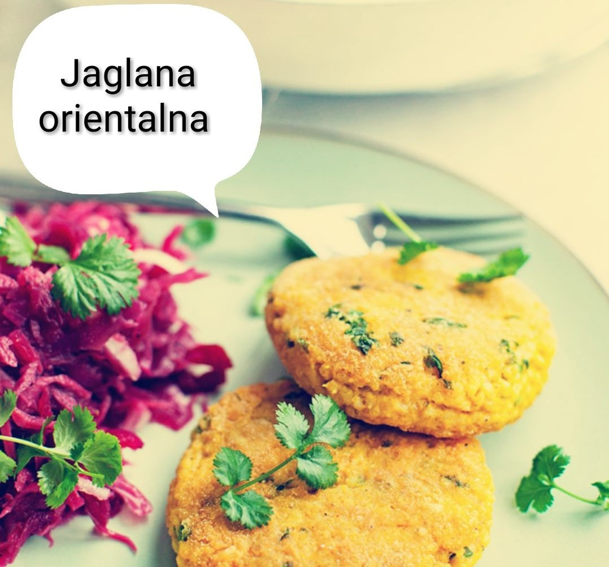
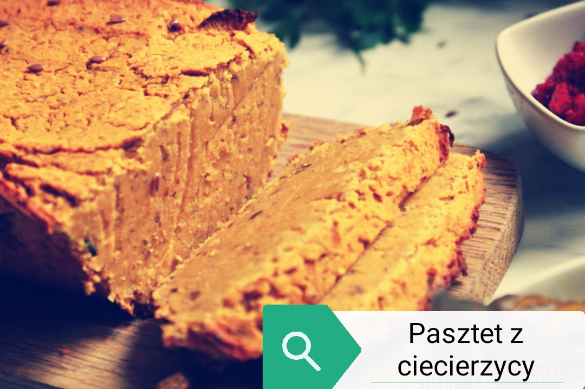
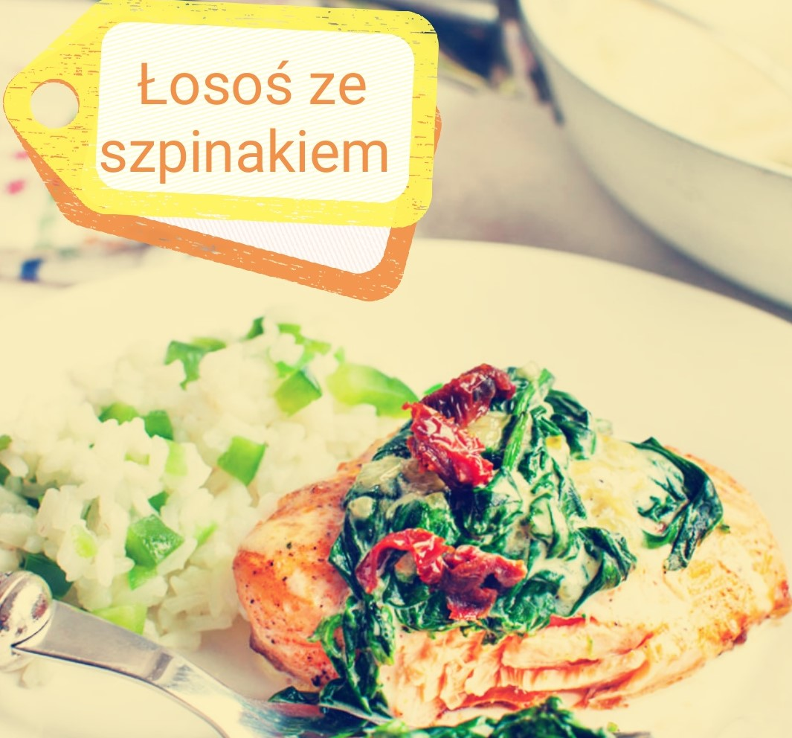

Kotlety z kaszy jaglanej w orientalnym stylu
- porcje: 8
- czas przygotowania: 35 min
- koszt: niski

- składniki:
- 120g kaszy jaglanej (suchej),
- 200g pieczarek,
- cebula,
- jajko,
- 100g sera żółtego,
- 3 łyżki mąki/bułki tartej,
-
0.5 łyżeczki: soli, papryki słodkiej, curry, ostrej papryki,
- 350ml mleka 3,2%,
- zioła: natka pietruszki/ kolendra.
przygotowanie
kaszę jaglaną kilkukrotnie przepłukać na sitku pod zimną wodą. Do
garnka wlać mleko, wrzucić kaszę i gotować pod przykryciem na
małym ogniu (pomimo tego pilnować żeby kasza się nie przypaliła),
aż kasza wsiąknie całe mleko. rozdrobnione pieczarki i cebulę
podsmażyć na łyżce oleju. Do ostudzonej kaszy dodać wszystkie
składniki, wymieszać i uformować jak kotlety mielone. Smażyć do
uzyskania złotego koloru i podawać z surówką, lub grillowanymi
warzywami.
Pikantny pasztet z ciecierzycy (bardzo białkowy)
- porcje: 12
- czas przygotowania: 1,5 godziny
- koszt: średni

- składniki:
- 100g bułki tartej,
- 0,5kg ugotowanej ciecierzycy (bez wody),
- cebula,
- 3 jajka,
- 2 marchewki,
- natka pietruszki,
- 3 ząbki czosnku,
- 0.5 szklanki bulionu,
-
0.5 łyżeczki: soli, ostrej papryki, pieprzu,
przygotowanie
Na patelni zeszklić pokrojoną w kostkę cebulę i marchewkę. Dodać
rozdrobniony czosnek i pietruszkę i smażyć przez chwilkę. Zalać
bulionem i dusić przez 5 minut. Ciecierzycę z warzywami i
przyprawami zblędować na gładką konsystencję. Dodać bułkę tartą,
jajka i wymieszać. Keksówkę wyłożyć papierem do pieczenia i
przełożyć masę. Piekarnik nagrzać do 180oC i piec pasztet przez
godzinę.
Bomba odżywcza Czyli pieczony łosoś ze szpinakiem i pomidorkami
- porcje: 4
- czas przygotowania: 30 min
- koszt: wysoki

- składniki:
- 400g świeżego łososia Atlantyckiego,
- sok z cytryny,
- cebula,
- 3 ząbki czosnku,
- 150ml śmietanki 30%,
- pomidorki koktajlowe/pomidory suszone,
-
0.5 łyżeczki: soli, ostrej papryki, pieprzu,
- 75g sera typu feta
przygotowanie
Łososia umyć delikatnie, osuszyć i odciąć skórę. Podzielić na
cztery porcje, doprawić solą, pieprzem i czosnkiem. Na patelnię
wrzucić mrożony szpinak doprawić solą, pieprzem i papryką, dodać
rozdrobniony czosnek i sok z cytryny. Pomidory pokroić na małe
kawałeczki i dorzucić do szpinaku. Na koniec dodać śmietankę i
odstawić do ostygnięcia. Łososia wstawić do piekarnika nagrzanego
do 200oC na 10 minut. Po tym czasie wyjąć i na wierzch położyć
szpinak i pokruszony ser i zapiekać jeszcze przez 7 minut.
Gotowego łososia najlepiej podawać z ryżem i pieczonymi warzywami.